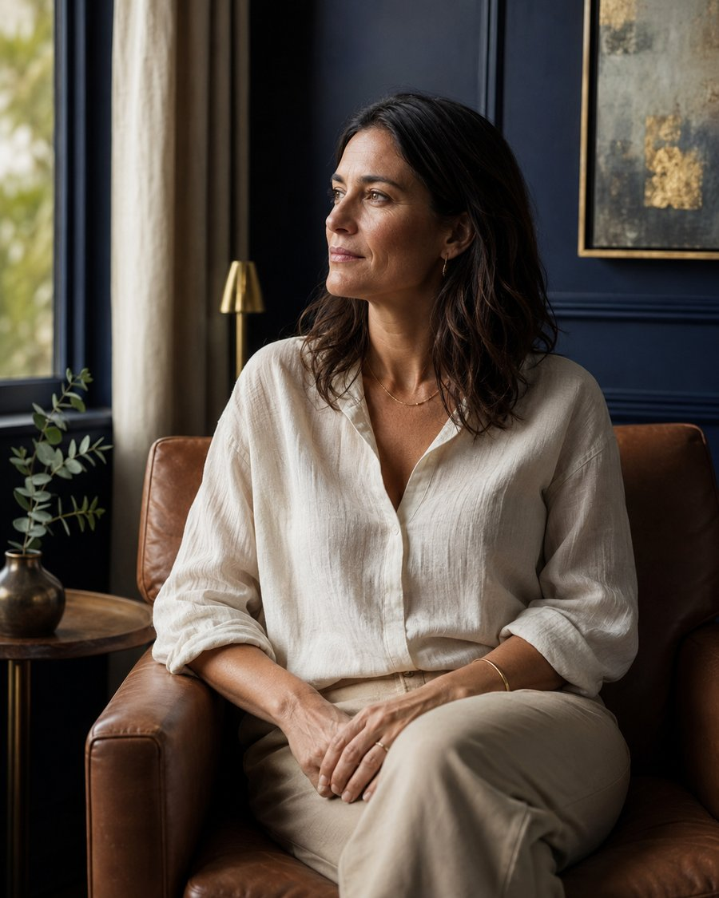
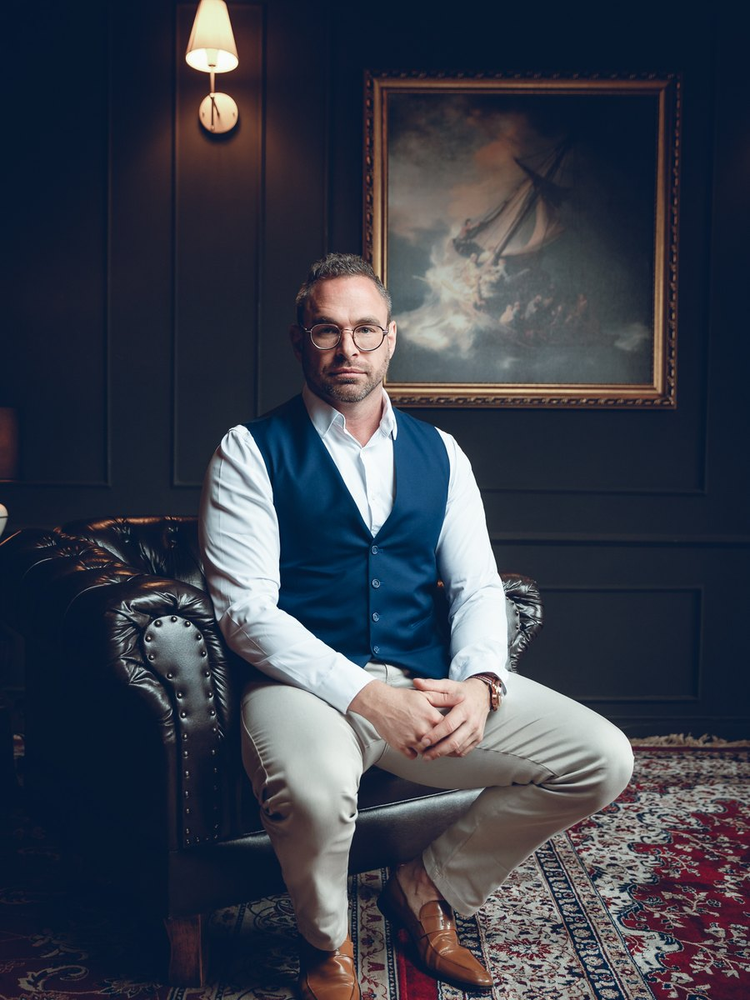
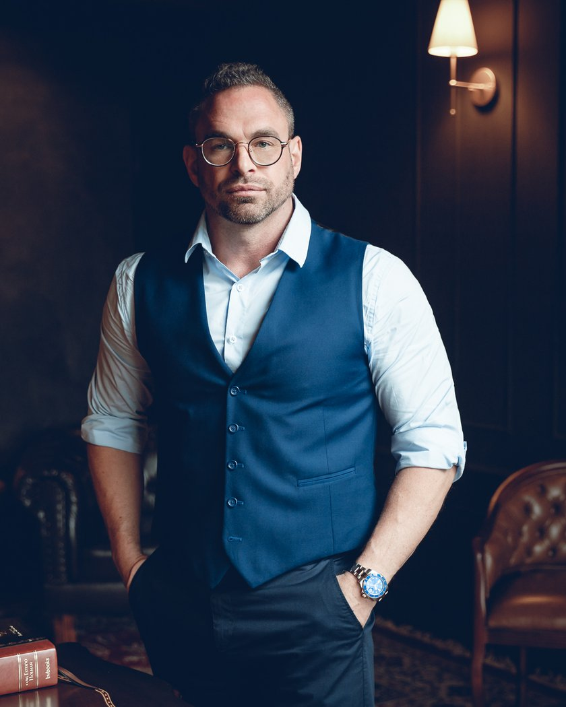
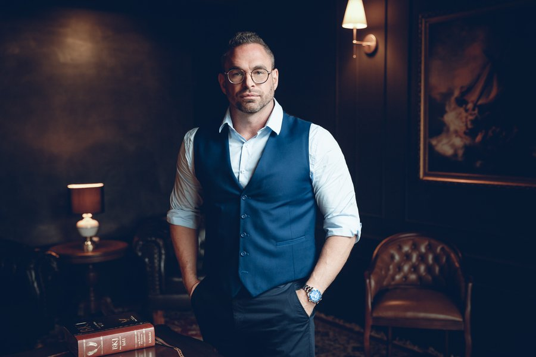
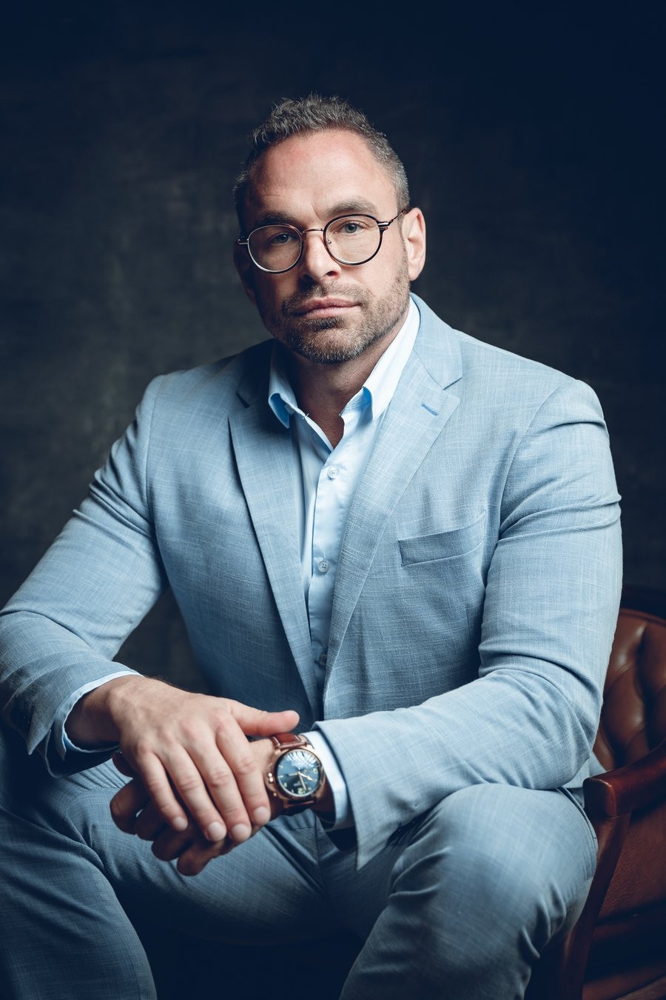

O efeito sanfona que não acaba
Você perde peso, comemora e, alguns meses depois, está tudo de volta. Às vezes com alguns quilos a mais. Já perdeu a conta de quantas vezes recomeçou do zero.
Um plano feito sob medida para o seu corpo. Investigamos o que trava o seu metabolismo, para você emagrecer com saúde e, dessa vez, manter o resultado.
Antes de falar de solução, vamos ser honestos sobre o que provavelmente já aconteceu com você:

Você perde peso, comemora e, alguns meses depois, está tudo de volta. Às vezes com alguns quilos a mais. Já perdeu a conta de quantas vezes recomeçou do zero.
Cansaço o dia inteiro, aquela sensação de "corpo pesado", vontade de comer o tempo todo e a impressão de que seu corpo trabalha contra você.
Você já seguiu a dieta da vizinha, o protocolo da internet, o cardápio que funcionou para todo mundo, menos para você. E ficou com a sensação de que o problema era falta de disciplina.
Nutricionista, academia, remédio por conta própria, jejum, low carb. Você tentou. E cada tentativa que não durou machucou um pouco mais a sua confiança.
Você não falhou em todas essas vezes. Você foi tratado como uma média. E o seu corpo não é uma média.
A maior parte das tentativas fracassa porque ataca só o sintoma, o peso na balança, e ignora a causa.
Influenciam diretamente o quanto o seu corpo guarda ou queima de gordura.
Como médico com pós-graduação em Nutrologia, o Dr. Rafael investiga esse conjunto antes de propor qualquer plano.
É construído um caminho individual, com ajuste do que for necessário e acompanhamento de perto para que o resultado se sustente, em vez de virar mais um ciclo de perder e recuperar.

Sem cardápio de gaveta. Sem promessa mágica. Um plano que faz sentido para a sua rotina, o seu corpo e a sua história.
Emagrecimento e saúde metabólica: investigação, ciência e acompanhamento próximo.

Médico (CRM/SC 21664) com pós-graduação em Nutrologia e formação internacional, com mais de 10 anos de experiência e participação em 5 congressos internacionais. Atua com foco em emagrecimento, saúde metabólica, prevenção e longevidade.
Atende em consultório em Florianópolis e por teleconsulta para todo o Brasil, com mais de 30 mil pacientes acompanhados. Sua prática tem uma regra: investigar antes de prescrever. O plano nasce dos exames, da história e da rotina de cada paciente, e é ajustado nos retornos.
Nada de cardápio pronto no primeiro dia. Primeiro entendemos o que está travando o seu metabolismo, usando história, exames e composição corporal.
Seu corpo, sua rotina, suas preferências e suas limitações. O plano é feito para você conseguir seguir, e não para caber num modelo padrão.
O objetivo não é a próxima balança boa. É você não precisar recomeçar nunca mais, com acompanhamento próximo e ajustes ao longo do caminho.
Condutas baseadas em evidência, com uso responsável de medicações quando há indicação clínica, e sem promessas milagrosas.
Um cuidado completo, do diagnóstico ao dia a dia:
história clínica, hábitos e fatores que influenciam seu peso e sua energia.
para investigar hormônios, metabolismo e possíveis causas ocultas.
para acompanhar gordura, massa magra e evolução real, além da balança.
de forma segura, responsável e com acompanhamento médico.
sono, disposição, comportamento alimentar e relação com a comida.
canal direto para dúvidas entre as consultas.
Clique no botão, conte rapidamente o seu caso e a nossa equipe te ajuda a agendar a avaliação, presencial em Florianópolis ou online.

Uma consulta sem pressa, para entender a sua história, pedir os exames necessários e montar um plano feito para o seu corpo.
Você segue com um plano claro e com acompanhamento próximo, ajustando o caminho até emagrecer e manter.
"[Depoimento real do paciente. Foco em: já tinha tentado várias vezes, o que mudou no acompanhamento e como se sente hoje.]"
[Nome], [idade/ocupação opcional]
"[Depoimento real. Foco em manter o resultado e recuperar disposição.]"
[Nome]
"[Depoimento real. Foco na diferença do atendimento individualizado.]"
[Nome]

O próximo recomeço não precisa ser mais um da lista. Com uma investigação real do seu metabolismo e um plano feito para você, dá para emagrecer com saúde e, principalmente, manter. Dê o primeiro passo hoje: fale com a nossa equipe e agende a sua avaliação com o Dr. Rafael.
Quero agendar minha avaliação agoraPresencial em Florianópolis · Online para todo o BrasilAtendimento pela equipe em horário comercial